실제 앱 화면에 기능별 제목과 설명을 더한 최종 이미지입니다.각 기기 폴더에서 01–07 순서로 업로드하세요. 원본 캡처는 Captures 폴더에 보관되어 있습니다.
1320 × 2868 · PNG · 표지 + 기능 소개 6장 · 시간/배터리 영역 제외
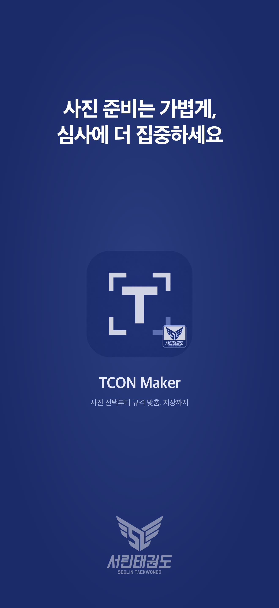
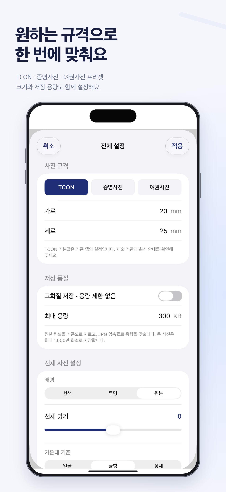
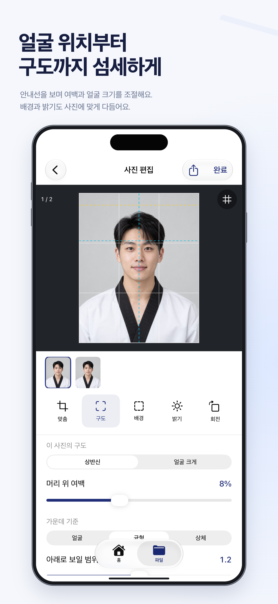
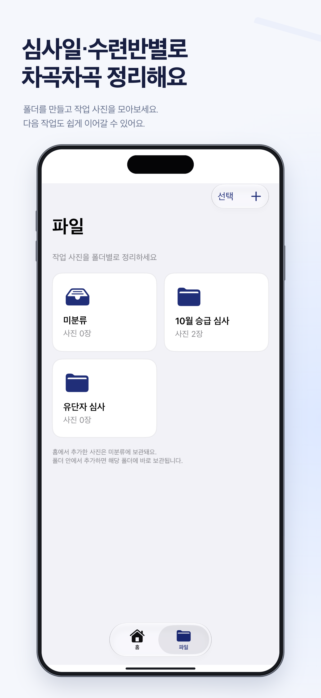
1179 × 2556 · PNG · 표지 + 기능 소개 6장 · 시간/배터리 영역 제외
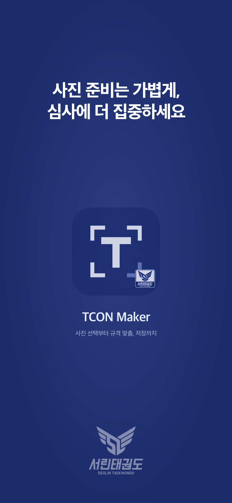
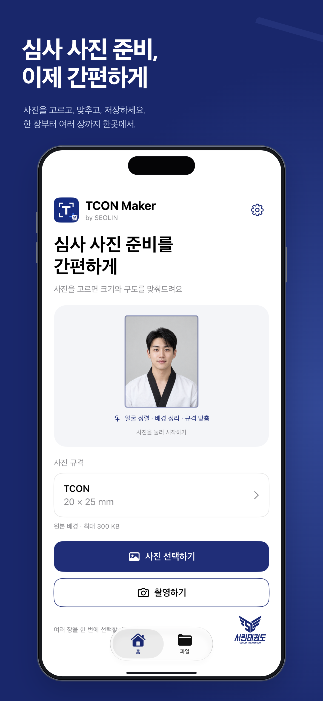
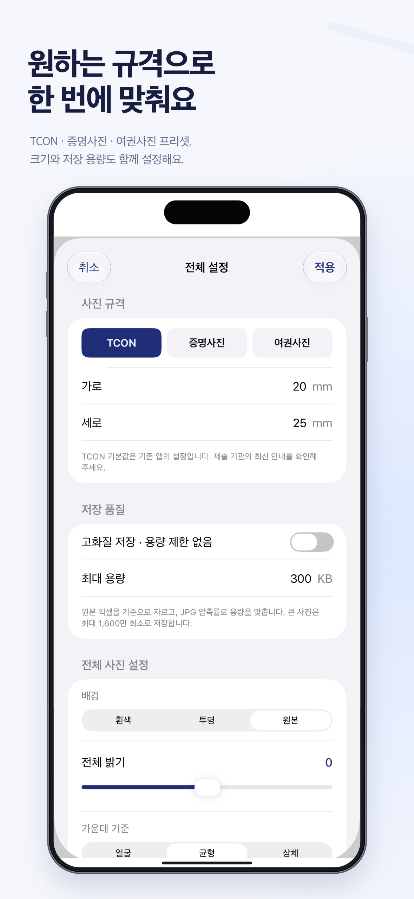
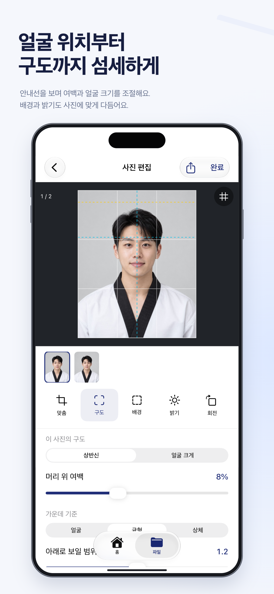
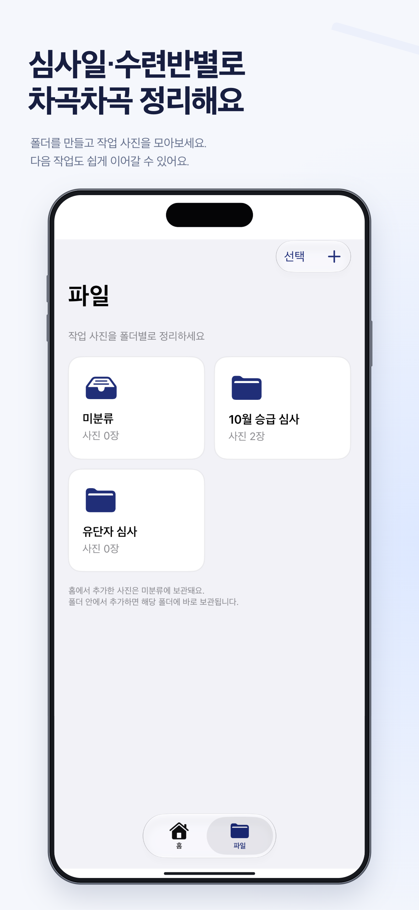
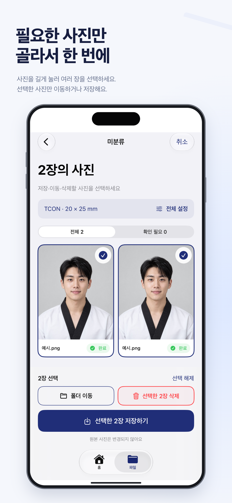
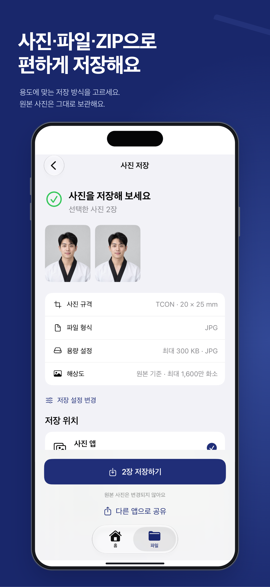
2064 × 2752 · PNG · 표지 + 기능 소개 6장 · 시간/배터리 영역 제외
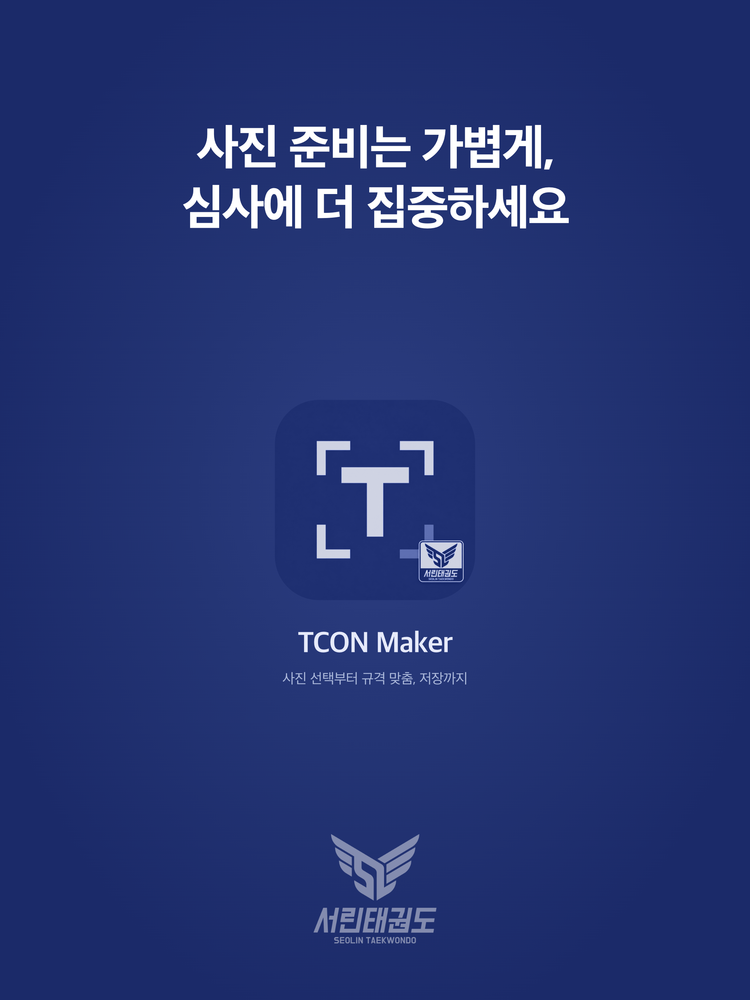
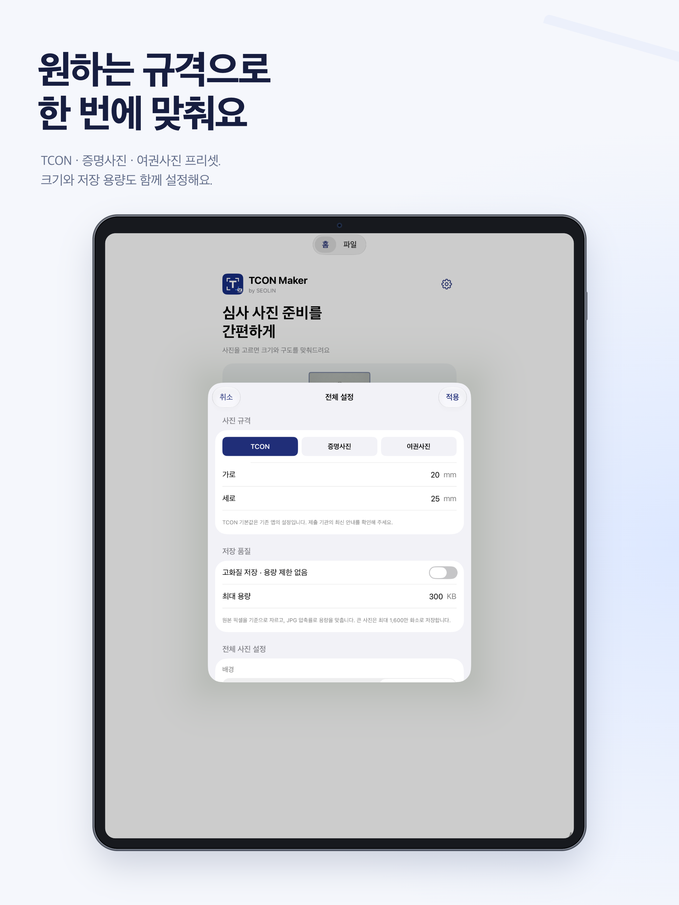
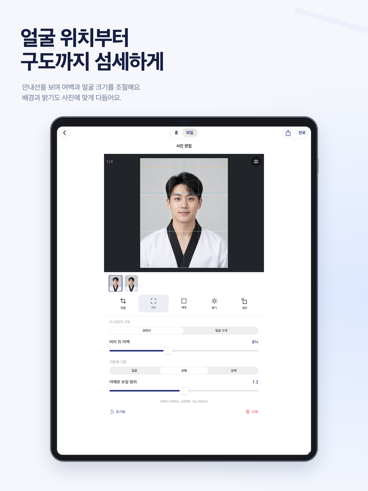
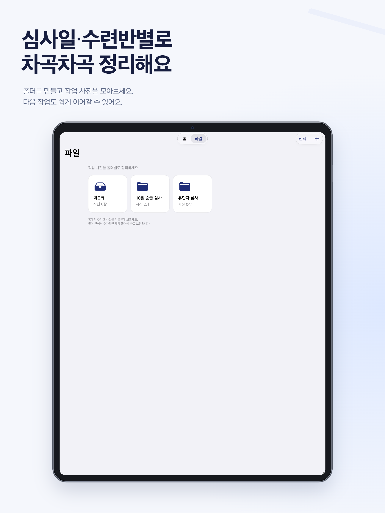
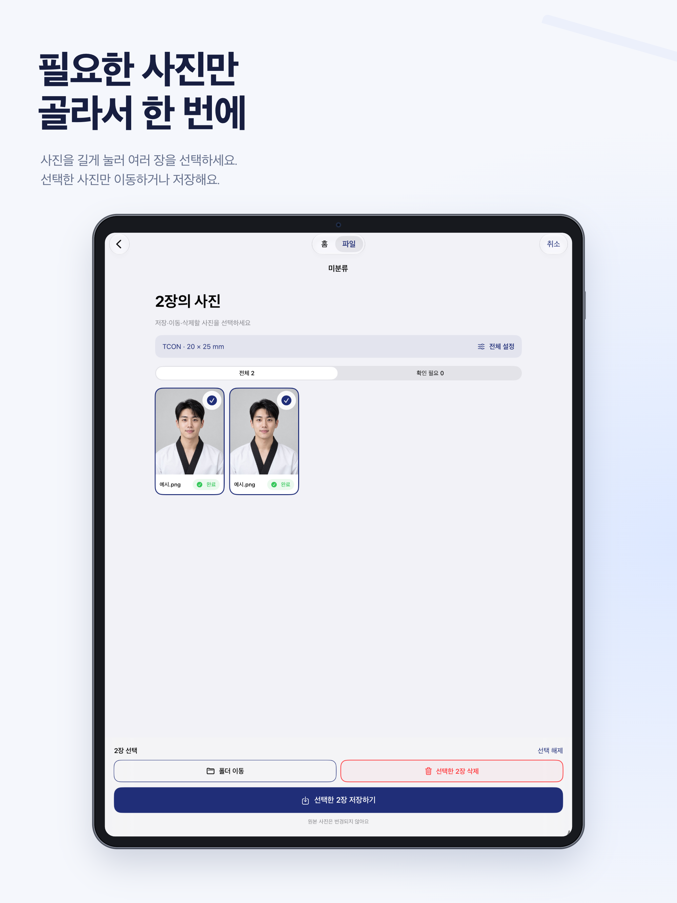
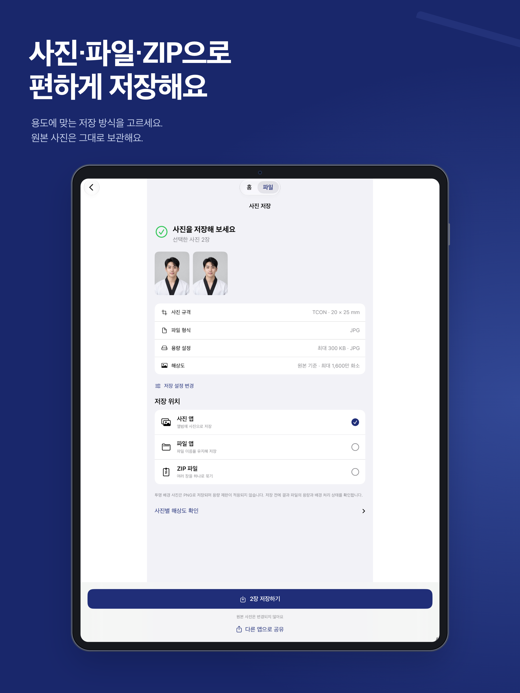